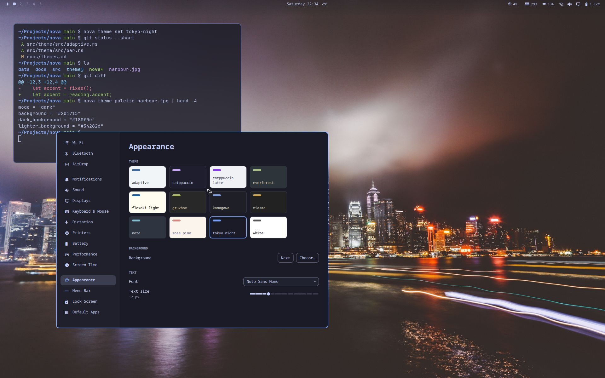
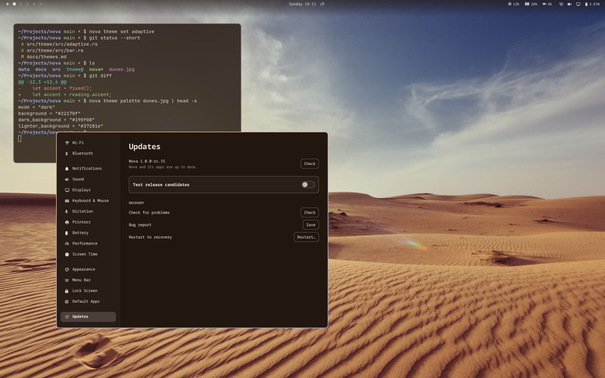
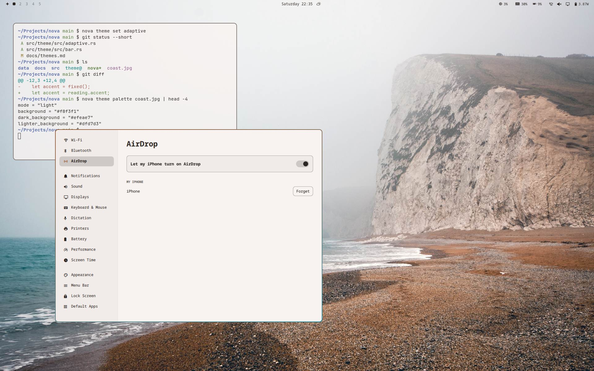
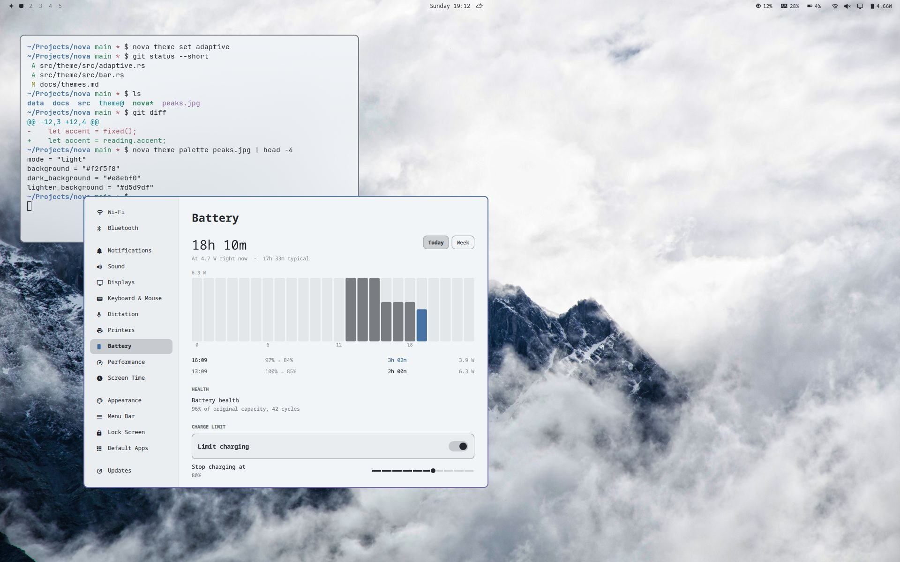

Dictation on your computer
Hold Super+D and speak; let go, and what you said is pasted where you were writing. It runs on your computer, and the speech model, 669 MB, is downloaded once, at the first use.
A light Arch Linux desktop, with what a PC needs to run properly.

Nova's adaptive theme takes its colors from your background, for the bar, the terminal and the apps at once. This page wears it too. Pick a photo: Nova and this page take its colors.
Matterhorn, as nova theme palette reads it:
Hyprland, a shell of its own, one nova command and a power manager, set up as one piece and installed from a USB stick. What it does not carry, the App Center installs when you want it.
For 64-bit PCs with UEFI · MIT licensed · a tested release every two weeks
Super+Space
The menu opens in the middle of the screen: apps, Settings, toggles, themes, updates, and the answer to a sum typed into it. Try it here.

Themes
Twelve themes reach the bar, the terminal, GTK and Qt apps, Supernova, Chrome and VS Code at once. This page changes with the one you pick.

A tour

Events and tasks on your computer, kept in step both ways with iCloud or any CalDAV calendar. Reminders come as notifications; the clock in the bar opens it.

Basic or scientific, typed or clicked, with your last 100 sums, and units converted as in the menu. Ctrl+Return on a sum in the menu opens it there.

Space on a file in Files shows it in a floating window, with nothing else on it: a picture, a PDF's first page, a video's first frame, the start of a text. The arrows go to the next file.

Apps from Arch's repositories and from Flathub, in one window: find them, install them, open them and remove them. What Nova does not carry, it installs.
Every day
Hold Super+D and speak; let go, and what you said is pasted where you were writing. It runs on your computer, and the speech model, 669 MB, is downloaded once, at the first use.

A tested release every two weeks, and a snapshot before each update. The boot menu's Snapshots start the system as it was before.

Photos and files arrive with AirDrop, with nothing to install on the iPhone. Sending to it and its notifications on the computer are previews.

Power Saver on battery, a charge limit, sleep that hibernates after two hours, and a sleeping discrete GPU. Tuned in depth for the ThinkPad P1 Gen 4i.
It installs without internet, can carry your files over from the old system, or hold a whole Nova to start any PC from.
Wi-Fi, Bluetooth, sound, displays, printers, the battery, performance, the look, the bar and updates. Each page only where the computer has it.
Install
Any 64-bit PC (x86-64) that starts with UEFI, with a disk of 64 GiB or more for Nova to take, and Secure Boot off.
The install guide has the questions, encryption, carrying files over and a portable Nova.
nova-usb from the newest release.sudo pacman -S gum
bash nova-usberase.erase.